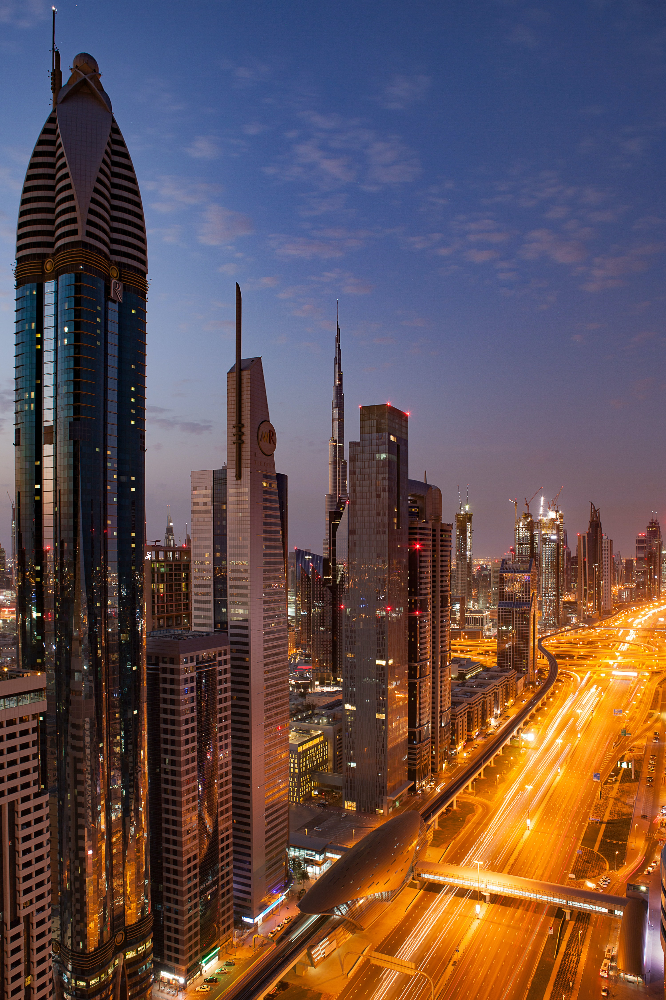

Dubai
Introduction
MDubai is unlike anywhere else on the planet. With its bold architecture and audacious style, the United Arab Emirates’ largest city is a distinct fusion of its Bedouin heritage and an ultramodern style all its own.
Dubai doesn’t just live up to its reputation; it will completely exceed your expectations. Explore the glitz and glam, and then uncover the ancient traditions of this multifaceted city. Here's my ultimate Dubai travel guide!

History
Essay-On-Dubai Dubai is one of the emirates of the seven in UAE. Dubai City is one of the major revenue-generating Emirate, located on the southeast coast of the Persian Gulf. The best and biggest tourist place where thousands of people visits to enjoy their holidays. Moreover, it is also one of the growing places where you can find jobs and start any business. Many people all over Asia have worked here and enjoying the facilities and benefits provided by this city. The currency of UAE has Dirham linked with AED equal to 3.67 to 1 US dollar.
Around 10 years ago it was surrounded by the sand located on the edge of Arabian Dessert, having no visible natural look or advantages. But now the ruler of UAE has made it a place with cozy villas sprinkled around the coastline. Dubai shares its border with Sharjah in the northeast and Abu Dhabi in the south.
Dubai including its all other emirates is well known for the state of the art architecture that made the world attracted towards it. Currently, Burj Khalifa in Dubai is one of the tallest buildings of the world. Nonetheless, the malls and other buildings have their own mind-blowing structures, such as; Dubai Mall, Burj al Arab, The marina torch, Cayan tower, and many others. Adding to the beauty of the UAE, it has fascinating desserts, luxurious hotels, heritage attractions, beautiful beaches, one of the very famous is the Jumeirah beach.
Dubai has rich cultural values with great hospitality principles. The emirates are generous and always welcoming. Islam is a way of life in the City and the best things is they believe in cultural diversity. Emiratis living in Dubai are in less proportion than the immigrants from other countries. Since last decades Emiratis has focused on growing their economy with diverse ethnicity and backgrounds. The best thing about Dubai city is it has maintained its peace even being such an expanded city with different people and rituals. The Emiratis also heading towards success by creating enhance in technology.
What To Do In Marrakech
Dubai has an important trade location because of its geographical proximity to Iran. There are many foreign tradesmen from Iran who have settled in the town. Dubai is the home to one of the largest commercial ports known as Jebel Ali port. This is the reason Dubai is the largest re-export hub in the region. Dubai is the ultimate platform for exporters around the world for both small and larger international businesses.
Dubai has transformed itself and has invested immensely in its tourism. There are many parks, malls, and locations that attract visitors. The activities like paragliding, cruise, sailing and water tours, the camel safari, luxury yacht tour, and much more thrill and excitement.